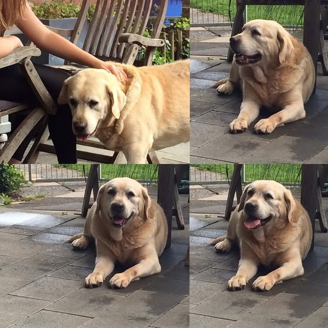
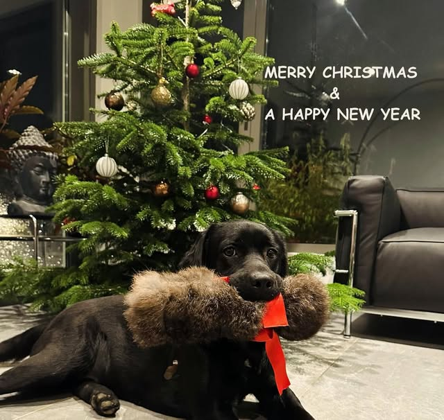
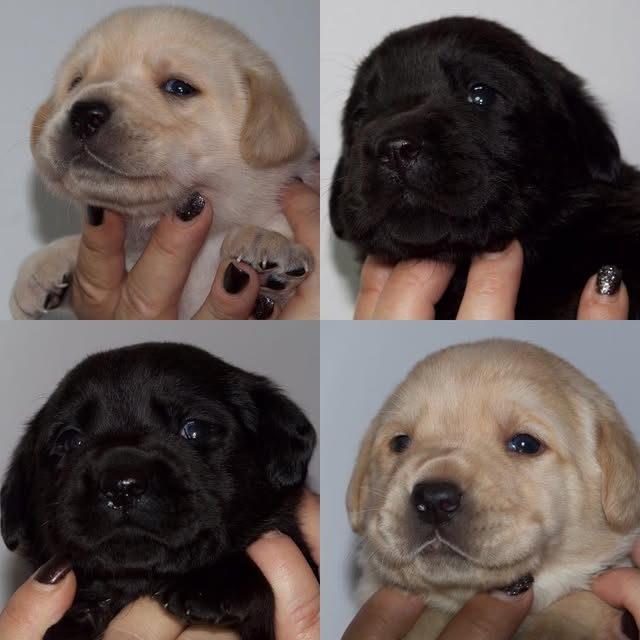

Zucht im Labrador Club Deutschland e. V. (VDH/FCI) seit 1998. Unsere Labradore leben im Haus und gehören zur Familie.
Kontakt aufnehmenWelpen & Wurfplanung
Seit 1993 gehört Tanjas Herz dem Labrador, seit 1998 züchtet sie im Labrador Club Deutschland e. V.
Alle Labradore leben im Haus als Familienmitglieder. Auch die Welpen werden im Haus geboren und wachsen dort mit uns und unseren Hunden auf.
Wir leben ländlich im Münsterland nahe Warendorf, auf einem landwirtschaftlichen Anwesen mit viel Freiraum für die Hunde. Wir betreiben Ackerbau (keine Nutztierhaltung) und einen Agrarservice.
Mitglied im Labrador Club Deutschland e. V. im VDH. Die Identität der Züchterin ist beim VDH geprüft.
Hunde begleiten Tanja, solange sie denken kann. Seit 1993 ist sie dem Labrador verfallen und kann sich ein Leben ohne einen, besser zwei Labradore nicht vorstellen.

Für unsere Würfe gibt es in der Regel Voranmeldungen. Wenn Sie Interesse an einem Welpen aus unserer Zucht haben oder Fragen haben, rufen Sie gern an oder schreiben Sie eine Nachricht.
KontaktProfil bei VDH-Welpen
| Wurf | Rüde | Hündin |
|---|